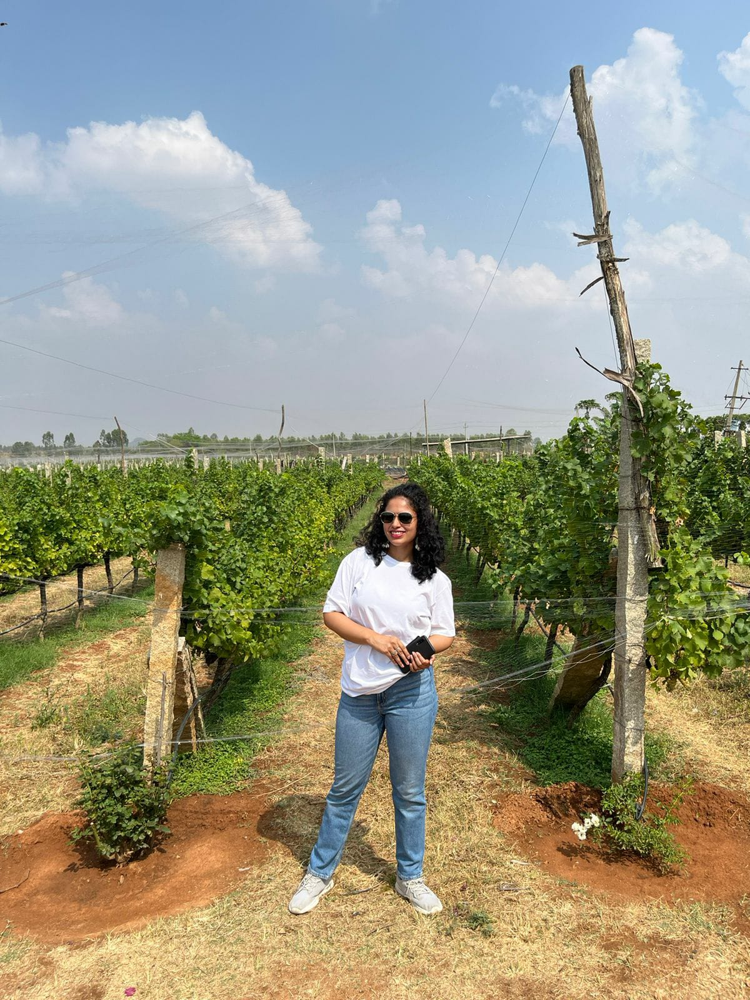

|

|
All you need to know about me!!
My name is Davina Lydia Pinto and I am the creator of this beautiful page 😎
Many a times people ask me why I didn't pursue the culniary arts, well the answer is, I simply don't know!
So here I am just a human who is a computer whiz by day and chef at night 😜
Growing up with my grandparents, I was fed mouthwatering meals.
My grandmother was an amazing chef, and I learned the majority of my culinary talents from her. I enjoy cooking and feeding others, and I believe that food can transport you across continents.
This website features the foods I enjoy the most from around the world.
In the 'The World' section, you'll discover a map with my favourite foods from each location. Once you click on the glowing points, you will be able to see some of my favourite recipes that I have created or enjoyed over the years. I am still young, therefore my adventure has only just began. That being said, the number of dishes on this map is limited, and I have yet to try various recipes.
You may help me with this project by filling out the feedback form and telling me about your favourites, as well as any suggestions for how I can enhance this website.
|